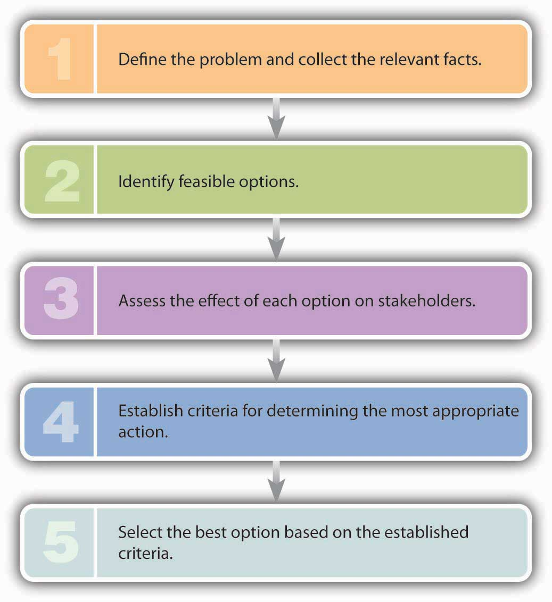
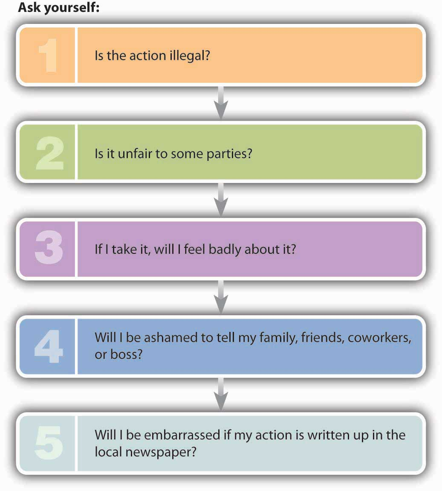
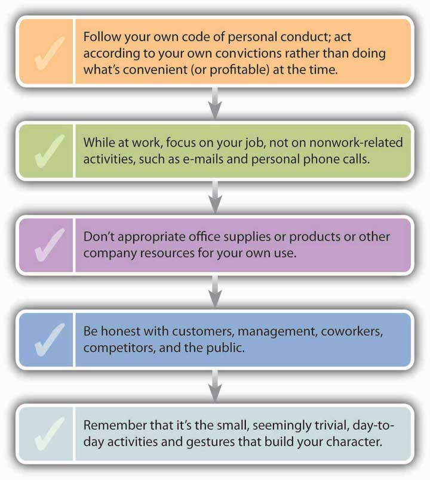
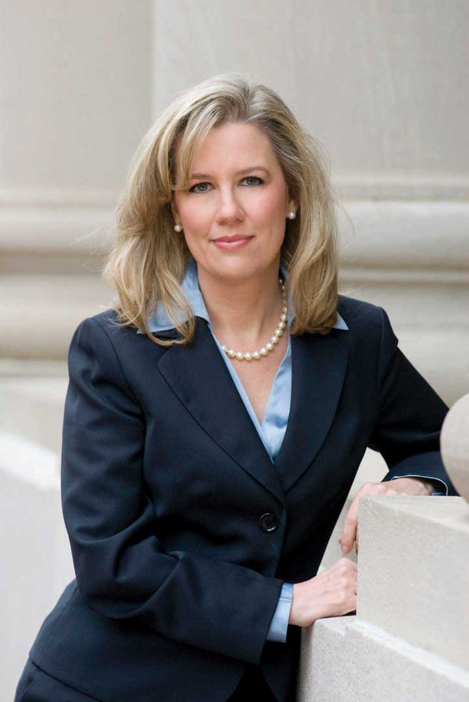
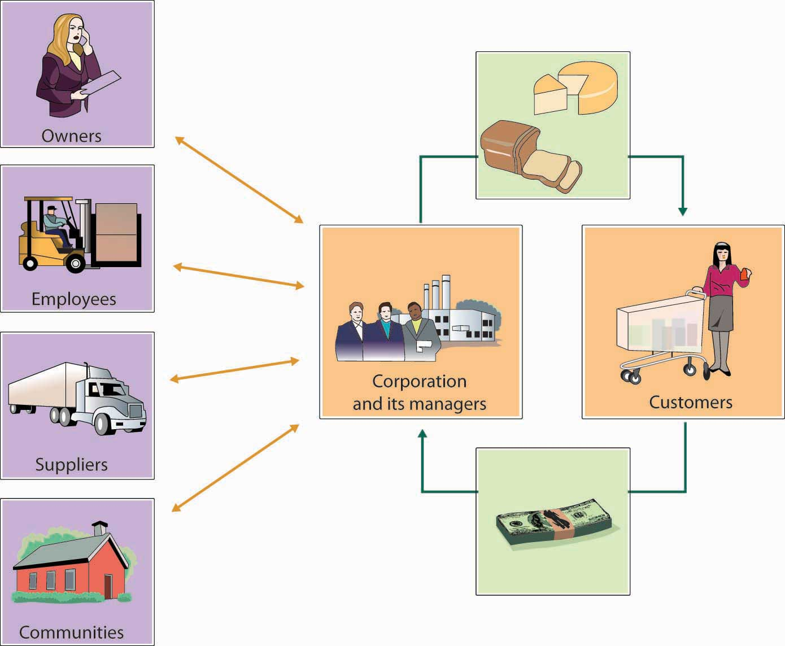
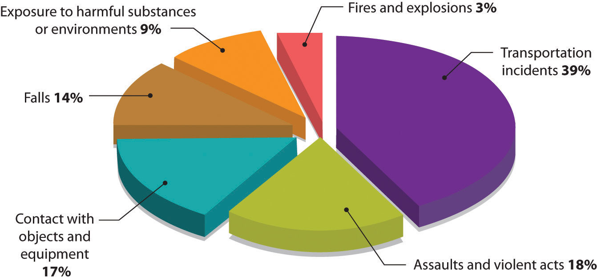
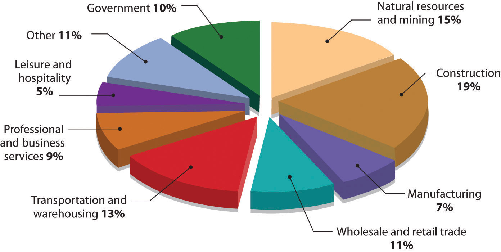
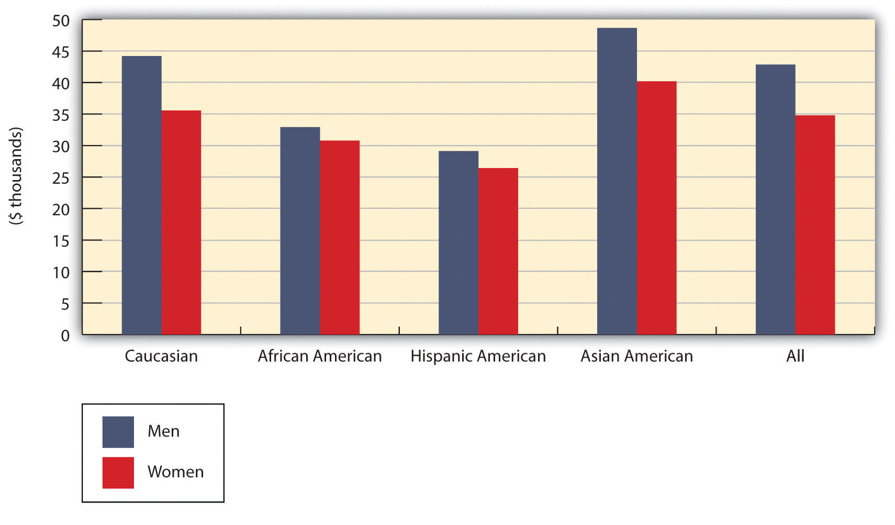
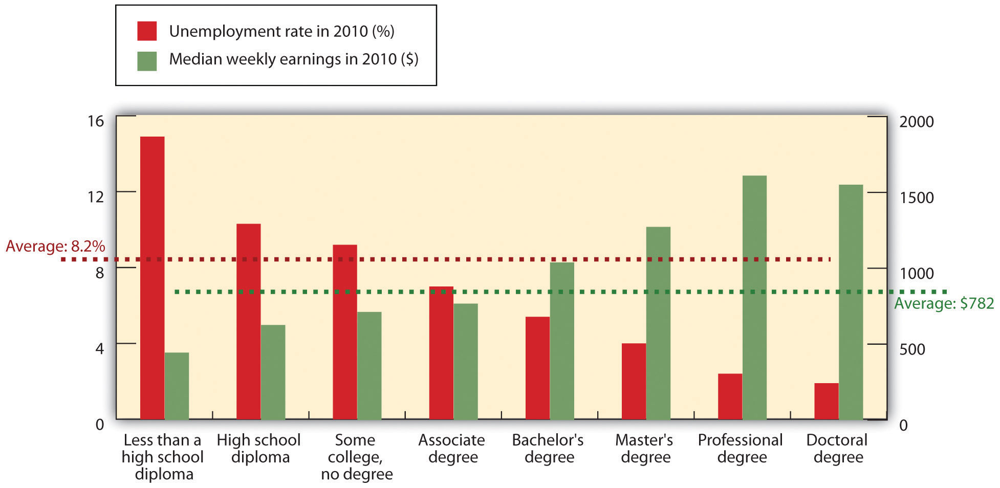
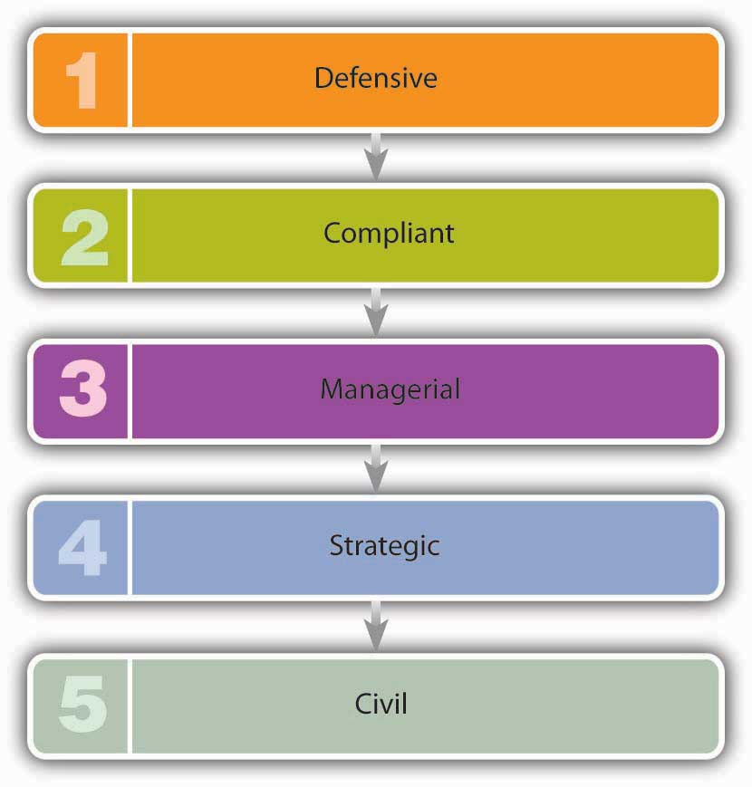

The one question Betty Vinson would prefer to avoid is “Mommy, why do you have to go to jail?”This case is based on Susan Pullman, “How Following Orders Can Harm Your Career,” Wall Street Journal, June 23, 2003, CareerJournal.com, http://www.cfo.com/article.cfm/3010537/c_3036075 (accessed January 22, 2012). Vinson graduated with an accounting degree from Mississippi State and married her college sweetheart. After a series of jobs at small banks, she landed a midlevel accounting job at WorldCom, at the time still a small long-distance provider. Sparked by the telecom boom, however, WorldCom soon became a darling of Wall Street, and its stock price soared. Now working for a wildly successful company, Vinson rounded out her life by reading legal thrillers and watching her twelve-year-old daughter play soccer.
WorldCom Inc.’s former director of management, Betty Vinson, leaves Federal Court after pleading guilty to securities fraud October 10, 2002, in New York City.
Photo by Adam Rountree/Getty Images
Her moment of truth came in mid-2000, when company executives learned that profits had plummeted. They asked Vinson to make some accounting adjustments to boost income by $828 million. She knew that the scheme was unethical (at the very least) but gave in and made the adjustments. Almost immediately, she felt guilty and told her boss that she was quitting. When news of her decision came to the attention of CEO Bernard Ebbers and CFO Scott Sullivan, they hastened to assure Vinson that she’d never be asked to cook any more books. Sullivan explained it this way: “We have planes in the air. Let’s get the planes landed. Once they’ve landed, if you still want to leave, then leave. But not while the planes are in the air.”Susan Pullman, “How Following Orders Can Harm Your Career,” Wall Street Journal, June 23, 2003, CareerJournal.com, http://www.cfo.com/article.cfm/3010537/c_3036075 (accessed January 22, 2012). Besides, she’d done nothing illegal, and if anyone asked, he’d take full responsibility. So Vinson decided to stay. After all, Sullivan was one of the top CFOs in the country; at age thirty-seven, he was already making $19 million a year.Amanda Ripley, “The Night Detective,” Time, December 22, 2002, http://www.time.com/time/personoftheyear/2002 (accessed April 24, 2006). Who was she to question his judgment?Jeff Clabaugh, “WorldCom’s Betty Vinson Gets 5 Months in Jail,” Washington Business Journal, August 5, 2005, Albuquerque Bizjournals.com, http://www.bizjournals.com/washington/stories/2005/08/01/daily51.html (accessed January 22, 2012).
Six months later, Ebbers and Sullivan needed another adjustment—this time for $771 million. This scheme was even more unethical than the first: It entailed forging dates to hide the adjustment. Pretty soon, Vinson was making adjustments on a quarterly basis—first for $560 million, then for $743 million, and yet again for $941 million. Eventually, Vinson had juggled almost $4 billion, and before long, the stress started to get to her: She had trouble sleeping, lost weight, looked terrible, and withdrew from people at work. But when she got a promotion and a $30,000 raise, she decided to hang in.
By spring 2002, however, it was obvious that adjusting the books was business as usual at WorldCom. Vinson finally decided that it was time to move on, but, unfortunately, an internal auditor had already put two and two together and blown the whistle. The Securities and Exchange Commission charged WorldCom with fraud amounting to $11 billion—the largest in U.S. history. Seeing herself as a valuable witness, Vinson was eager to tell what she knew. The government, however, regarded her as more than a mere witness. When she was named a co-conspirator, she agreed to cooperate fully and pleaded guilty to criminal conspiracy and securities fraud. And that’s why Betty Vinson will spend five months in jail. But she won’t be the only one doing time: Scott Sullivan—who claims he’s innocent—will be in jail for five years, and Bernie Ebbers—who swears he’s innocent also—will be locked up for twenty-five years.Scott Reeves, “Lies, Damned Lies and Scott Sullivan,” Forbes.com, February 17, 2005, http://www.forbes.com/2005/02/17/cx_sr_0217ebbers.html (accessed January 22, 2012); David A. Andelman, “Scott Sullivan Gets Slap on the Wrist—WorldCom Rate Race,” Forbes.com, August 12, 2005, http://www.mindfully.org/Industry/2005/Sullivan-WorldCom-Rat12aug05.htm (accessed January 22, 2012).
So where did Betty Vinson, mild-mannered midlevel executive and mother, go wrong? How did she manage to get involved in a scheme that not only bilked investors out of billions but also cost seventeen thousand people their jobs?Susan Pullman, “How Following Orders Can Harm Your Career,” Wall Street Journal, June 23, 2003, CareerJournal.com, http://www.cfo.com/article.cfm/3010537/c_3036075 (accessed January 22, 2012). Ultimately, of course, we can only guess. Maybe she couldn’t say no to her bosses; maybe she believed that they’d take full responsibility for her accounting “adjustments.” Possibly she was afraid of losing her job. Perhaps she didn’t fully understand the ramifications of what she was doing. What we do know is that she disgraced herself and headed for jail.“World-Class Scandal at WorldCom,” CBSNews.com, June 26, 2002, http://www.cbsnews.com/stories/2002/06/26/national/main513473.shtml (accessed January 22, 2012).
The WorldCom situation is not an isolated incident. The boom years of the 1990s were followed by revelations of massive corporate corruption, including criminal schemes at companies such as Enron, Adelphia, and Tyco. In fall 2001, executives at Enron, an energy supplier, admitted to accounting practices concocted to overstate the company’s income over a period of four years. In the wake of the company’s collapse, stock prices plummeted from $90 to $1 a share, inflicting massive financial losses on the investment community. Thousands of employees lost not only their jobs but their retirement funds, as well.Daniel Kadlec, “Enron: Who’s Accountable?” Time, January 21, 2002, 31. Before the Enron story was off the front pages, officials at Adelphia, the nation’s sixth-largest cable company, disclosed that founder and CEO John Rigas had treated the publicly owned firm as a personal piggy bank, siphoning off billions of dollars to support his family’s extravagant lifestyle and bankrupting the company in the process.David Lieberman, “Prosecutors Wrap Up $3.2B Adelphia Case,” USA Today, June 25, 2004, http://www.usatoday.com/money/industries/telecom/2004-06-25-adelphia_x.htm (accessed January 22, 2012). Likewise, CEO Dennis Koslowzki of conglomerate Tyco International was apparently confused about what was his and what belonged to the company. Besides treating himself to a $30 million estate in Florida and a $7 million Park Avenue apartment, Koslowzki indulged in a taste for expensive office accessories—such as a $15,000 umbrella stand, a $17,000 traveling toilette box, and a $2,200 wastebasket—that eventually drained $600 million from company coffers.“Tyco Wants Its Money Back,” CNNMoney, September 17, 2002, http://money.cnn.com/2002/09/17/news/companies/tyco/index.htm (accessed January 22, 2012).
As crooked as these CEOs were, Bernie Madoff, founder of Bernard L. Madoff Investment Securities and former chairman of the NASDAQ stock exchange, makes them seem like dime-store shoplifters.“Top 10 Crooked CEOs,” Time Specials, Time.com, http://www.time.com/time/specials/packages/article/0,28804,1903155_1903156_1903160,00.html (accessed July 25, 2011). Madoff is alleged to have run a giant Ponzi schemeFred Langan, “The $50-billion BMIS Debacle: How a Ponzi Scheme Works,” CBSNews, December 15, 2008, http://www.cbc.ca/news/business/story/2008/12/15/f-langan-bmis.html (accessed January 26, 2009). that cheated investors of up to $65 billion. His wrongdoings won him a spot at the top of Time Magazine’s Top 10 Crooked CEOs. According to the SEC charges, Madoff convinced investors to give him large sums of money. In return, he gave them an impressive 8 percent to 12 percent return a year. But Madoff never really invested their money. Instead, he kept it for himself. He got funds to pay the first investors their return (or their money back if they asked for it) by bringing in new investors. Everything was going smoothly until the fall of 2008, when the stock market plummeted and many of his investors asked for their money back. As he no longer had their money, the game was over and he had to admit that the whole thing was just one big lie. Thousands of investors, including many of his wealthy friends, not-so-rich retirees who trusted him with their life savings, and charitable foundations, were financially ruined. All those harmed by Madoff either directly or indirectly were pleased when he was sentenced to jail for one-hundred and fifty years.
Are these cases merely aberrations? A Time/CNN poll conducted in the midst of all these revelations found that 72 percent of those surveyed don’t think so. They believe that breach of investor and employee trust represents an ongoing, long-standing pattern of deceptive behavior by officials at a large number of companies.Nancy Gibbs et al., “Summer of Mistrust,” Time, July 22, 2002, 20. If they’re right, then a lot of questions need to be answered. Why do such incidents happen (and with such apparent regularity)? Who are the usual suspects? How long until the next corporate bankruptcy record is set? What action can be taken—by individuals, organizations, and the government—to discourage such behavior?
It’s in the best interest of a company to operate ethically. Trustworthy companies are better at attracting and keeping customers, talented employees, and capital. Those tainted by questionable ethics suffer from dwindling customer bases, employee turnover, and investor mistrust.
Let’s begin this section by addressing one of the questions that we posed previously: What can individuals, organizations, and government agencies do to foster an environment of ethical and socially responsible behavior in business? First, of course, we need to define two terms: business ethics and social responsibility. They’re often used interchangeably, but they don’t mean the same thing.
You probably already know what it means to be ethicalAbility and willingness to distinguish right from wrong and when you’re practicing one or the other.: to know right from wrong and to know when you’re practicing one instead of the other. At the risk of oversimplifying, then, we can say that business ethicsApplication of ethical behavior in a business context. is the application of ethical behavior in a business context. Acting ethically in business means more than simply obeying applicable laws and regulations: It also means being honest, doing no harm to others, competing fairly, and declining to put your own interests above those of your company, its owners, and its workers. If you’re in business you obviously need a strong sense of what’s right and what’s wrong (not always an easy task). You need the personal conviction to do what’s right, even if it means doing something that’s difficult or personally disadvantageous.
Corporate social responsibilityApproach that an organization takes in balancing its responsibilities toward different stakeholders when making legal, economic, ethical, and social decisions. deals with actions that affect a variety of parties in a company’s environment. A socially responsible company shows concern for its stakeholdersParties who are interested in the activities of a business because they’re affected by them.—anyone who, like owners, employees, customers, and the communities in which it does business, has a “stake” or interest in it. We’ll discuss corporate responsibility later in the chapter. At this point, we’ll focus on ethics.
One goal of anyone engaged in business should be to foster ethical behavior in the organizational environment. How do we know when an organization is behaving ethically? Most lists of ethical organizational activities include the following criteria:
Whether you work for a business or for a nonprofit organization, you probably have a sense of whether your employer is ethical or unethical. Employees at companies that consistently make Business Ethics magazine’s list of the “100 Best Corporate Citizens” regard the items on the previous list as business as usual in the workplace. Companies that routinely win good-citizenship awards include Procter & Gamble, Hewlett-Packard, Intel, Avon Products, Cisco Systems, and Merck.“100 Best Corporate Citizens for 2010,” Corporate Responsibility Magazine, no. 11, Spring 2011, http://thecro.com/content/100-best-corporate-citizens (accessed September 5, 2011).
By contrast, employees with the following attitudes tend to suspect that their employers aren’t as ethical as they should be:
In the early 1990s, many workers in Sears automotive service centers shared suspicions about certain policies, including the ways in which they were supposed to deal with customers. In particular, they felt uncomfortable with a new compensation plan that rewarded them for selling alignments, brake jobs, shock absorbers, and other parts and services. Those who met quotas got bonuses; those who didn’t were often fired. The results shouldn’t be surprising: In their zeal to meet quotas and keep their jobs, some employees misled customers into believing they needed parts and services when, in fact, they were not needed. Before long, Sears was flooded with complaints from customers—as were law-enforcement officials—in more than forty states. Sears denied any intent to deceive customers but was forced not only to eliminate sales commissions but also to pay out $60 million in refunds.
Ideally, prison terms, heavy fines, and civil suits should put a damper on corporate misconduct, but, unfortunately, many experts suspect that this assumption may be a bit optimistic. Whatever the condition of the ethical environment in the near future, one thing seems clear: The next generation entering business—which includes most of you—will find a world much different than the one that waited for the previous generation. Recent history tells us in no uncertain terms that today’s business students, many of whom are tomorrow’s business leaders, need a much sharper understanding of the difference between what is and isn’t ethically acceptable. As a business student, one of your key tasks is learning how to recognize and deal with the ethical challenges that will confront you.
Moreover, knowing right from wrong will make you more marketable as a job candidate. Asked what he looked for in a new hire, Warren Buffet, the world’s most successful investor, replied: “I look for three things. The first is personal integrity, the second is intelligence, and the third is a high energy level.” He paused and then added: “But if you don’t have the first, the second two don’t matter.”Quoted by Adrian Gostick and Dana Telford, The Integrity Advantage (Salt Lake City: Gibbs Smith, 2003), 3–4.
(AACSB) Analysis
Is Honesty Academic?
Just as businesses have codes of conduct for directing employee behavior in job-related activities, so, too, do colleges and universities have codes of conduct to guide students’ academic behavior. They’re called various things—honor codes, academic integrity policies, policies on academic honesty, student codes of conduct—but they all have the same purpose: to promote academic integrity and to create a fair and ethical environment for all students.
At most schools, information on academic integrity is available from one of the following sources:
Assignment
Locate information on your school’s academic integrity policies and answer the following questions:
Betty Vinson didn’t start out at WorldCom with the intention of going to jail. She undoubtedly knew what the right behavior was, but the bottom line is that she didn’t do it. How can you make sure that you do the right thing in the business world? How should you respond to the kinds of challenges that you’ll be facing? Because your actions in the business world will be strongly influenced by your moral character, let’s begin by assessing your current moral condition. Which of the following best applies to you (select one)?
Now that you’ve placed yourself in one of these categories, here are some general observations. Few people put themselves below the second category. Most of us are ethical most of the time, and most people assign themselves to category number two—“I’m mostly ethical.” Why don’t more people claim that they’re always ethical? Apparently, most people realize that being ethical all the time takes a great deal of moral energy. If you placed yourself in category number two, ask yourself this question: How can I change my behavior so that I can move up a notch? The answer to this question may be simple. Just ask yourself an easier question: How would I like to be treated in a given situation?John C. Maxwell, There’s No Such Thing as “Business Ethics”: There’s Only One Rule for Making Decisions (New York: Warner Books, 2003), 19–21.
Unfortunately, practicing this philosophy might be easier in your personal life than in the business world. Ethical challenges arise in business because business organizations, especially large ones, have multiple stakeholders and because stakeholders make conflicting demands. Making decisions that affect multiple stakeholders isn’t easy even for seasoned managers; and for new entrants to the business world, the task can be extremely daunting. Many managers need years of experience in an organization before they feel comfortable making decisions that affect various stakeholders. You can, however, get a head start in learning how to make ethical decisions by looking at two types of challenges that you’ll encounter in the business world: ethical dilemmas and ethical decisions.
An ethical dilemmaMorally problematic situation. is a morally problematic situation: You have to pick between two or more acceptable but often opposing alternatives that are important to different groups. Experts often frame this type of situation as a “right-versus-right” decision. It’s the sort of decision that Johnson & Johnson (known as J&J) CEO James Burke had to make in 1982.See Tamara Kaplan, “The Tylenol Crisis: How Effective Public Relations Saved Johnson & Johnson,” http://www.aerobiologicalengineering.com/wxk116/TylenolMurders/crisis.html (accessed January 22, 2012). On September 30, twelve-year-old Mary Kellerman of Chicago died after her parents gave her Extra-Strength Tylenol. That same morning, twenty-seven-year-old Adam Janus, also of Chicago, died after taking Tylenol for minor chest pain. That night, when family members came to console his parents, Adam’s brother and his wife took Tylenol from the same bottle and died within forty-eight hours. Over the next two weeks, four more people in Chicago died after taking Tylenol. The actual connection between Tylenol and the series of deaths wasn’t made until an off-duty fireman realized from news reports that every victim had taken Tylenol. As consumers panicked, J&J pulled Tylenol off Chicago-area retail shelves. Researchers discovered Tylenol capsules containing large amounts of deadly cyanide. Because the poisoned bottles came from batches originating at different J&J plants, investigators determined that the tampering had occurred after the product had been shipped.
So J&J wasn’t at fault. But CEO Burke was still faced with an extremely serious dilemma: Was it possible to respond to the tampering cases without destroying the reputation of a highly profitable brand? Burke had two options:
Burke opted to recall all 31 million bottles of Extra-Strength Tylenol on the market. The cost to J&J was $100 million, but public reaction was quite positive. Less than six weeks after the crisis began, Tylenol capsules were reintroduced in new tamper-resistant bottles, and by responding quickly and appropriately, J&J was eventually able to restore the Tylenol brand to its previous market position. When Burke was applauded for moral courage, he replied that he’d simply adhered to the long-standing J&J credo that put the interests of customers above those of other stakeholders. His only regret was that the tamperer was never caught.Yaakov Weber, “CEO Saves Company’s Reputation, Products,” New Sunday Times, June 13, 1999, http://adtimes.nstp.com.my/jobstory/jun13.htm (accessed April 24, 2006).
If you’re wondering what your thought process should be if you’re confronted with an ethical dilemma, you could do worse than remember the mental steps listed in Figure 2.2 "How to Face an Ethical Dilemma"—which happen to be the steps that James Burke took in addressing the Tylenol crisis:
Figure 2.2 How to Face an Ethical Dilemma
In contrast to the “right-versus-right” problem posed by an ethical dilemma, an ethical decisionDecision in which there is a right (ethical) choice and a wrong (unethical or illegal) choice. entails a “right-versus-wrong” decision—one in which there is a right (ethical) choice and a wrong (unethical or illegal) choice. When you make a decision that’s unmistakably unethical or illegal, you’ve committed an ethical lapseSituation in which an individual makes a decision that’s unmistakably unethical or illegal.. Betty Vinson, for example, had an ethical lapse when she caved in to her bosses’ pressure to cook the WorldCom books. If you’re presented with what appears to be this type of choice, asking yourself the questions in Figure 2.3 "How to Avoid an Ethical Lapse" will increase your odds of making an ethical decision.
Figure 2.3 How to Avoid an Ethical Lapse
To test the validity of this approach, let’s take a point-by-point look at Betty Vinson’s decisions:
So Vinson could have answered our five test questions with five yeses. To simplify matters, remember the following rule of thumb: If you answer yes to any one of these five questions, odds are that you’re about to do something you shouldn’t.
As discussed earlier in this section, Johnson & Johnson received tremendous praise for the actions taken by its CEO, James Burke, in response to the 1982 Tylenol catastrophe. But things change. To learn how a company can destroy its good reputation, let’s fast forward to 2008 and revisit J&J and its credo, which states, “We believe our first responsibility is to the doctors, nurses and patients, to mothers and fathers and all others who use our products and services. In meeting their needs everything we do must be of high quality.”Credo, Johnson & Johnson company Web site, http://www.jnj.com/connect/about-jnj/jnj-credo (accessed August 15, 2011). How could a company whose employees believed so strongly in its credo find itself under criminal and congressional investigation for a series of recalls due to defective products?Mina Kimes, “Why J&J’s Headache Won’t Go Away,” Fortune (CNNMoney), August 19, 2010, http://money.cnn.com/2010/08/18/news/companies/jnj_drug_recalls.fortune/index.htm (accessed August 12, 2011). In a three-year period, the company recalled twenty-four products, including Children’s, Infants’ and Adults’ Tylenol, Motrin, and Benadryl;McNeil Product Recall Information, http://www.mcneilproductrecall.com/ (accessed August 12, 2011). 1-Day Acuvue TruEye contact lenses sold outside the U.S.;Bill Berkrot, “J&J Confirms Widely Expanded Contact Lens Recall,” December 1, 2010, http://www.reuters.com/article/2010/12/01/us-jandj-recall-idUSTRE6B05G620101201 (accessed August 12, 2011). and hip replacements.New York Times, Business Day, August 20, 2010, http://www.nytimes.com/2010/08/27/business/27hip.html (accessed August 12, 2011).
Unlike the 1982 J&J Tylenol recall, no one died from the defective products, but customers were certainly upset to find they had purchased over-the-counter medicines for themselves and their children that were potentially contaminated with dark particles or tiny specks of metal;Mina Kimes, “Why J&J’s Headache Won’t Go Away,” Fortune (CNNMoney), August 19, 2010, http://money.cnn.com/2010/08/18/news/companies/jnj_drug_recalls.fortune/index.htm (accessed August 12, 2011). contact lenses that contained a type of acid that caused stinging or pain when inserted in the eye;Jonathan D. Rockoff and Jon Kamp, “J&J Contact Lenses Recalled,” Wall Street Journal, Health section, August 24, 2010, http://online.wsj.com/article/SB10001424052748703846604575447430303567108.html (accessed August 15, 2011). and defective hip implants that required patients to undergo a second hip replacement.Natasha Singer, “Johnson & Johnson Recalls Hip Implants,” New York Times, Business Day, August 20, 2010, http://www.nytimes.com/2010/08/27/business/27hip.html (accessed August 12, 2011).
Who bears the responsibility for these image-damaging blunders? We’ll identify two individuals who were at least partially responsible for the decline of J&J’s reputation: The first is the current CEO—William Weldon—who has been criticized for being largely invisible and publicly absent during the recalls.Mina Kimes, “Why J&J’s Headache Won’t Go Away,” Fortune (CNNMoney), August 19, 2010, http://money.cnn.com/2010/08/18/news/companies/jnj_drug_recalls.fortune/index.htm (accessed August 12, 2011). Additionally, he admitted that he did not understand the consumer division where many of the quality control problems originated.Mina Kimes, “Why J&J’s Headache Won’t Go Away,” Fortune (CNNMoney), August 19, 2010, http://money.cnn.com/2010/08/18/news/companies/jnj_drug_recalls.fortune/index.htm (accessed August 12, 2011). Some members of the board of directors were not pleased with his actions (or inactions) and were upset at the revenue declines from the high-profile recalls. Consequently, Weldon was given only a 3 percent raise for 2011, and his end-of-year bonus was cut by 45 percent. But don’t cry for him: His annual compensation for the year (including salary, bonus, and stock options) was $23 million—down from $26 million in the previous year.Matthew Perrone, “J&J CEO Gets 3% Raise, but Bonus Is Cut,” USA Today, February 25, 2011, http://www.usatoday.com/money/industries/health/2011-02-25-jnj_N.htm (accessed August 15, 2011).
The second individual who was at least partially responsible for the decline of J&J’s reputation is Colleen Goggins, Worldwide Chairman of J&J’s Consumer Group, who was in charge of the factories that produced many of the recalled products. She was heavily criticized by fellow employees for her excessive cost-cutting measures and her propensity to replace experienced scientists with new hires.Mina Kimes, “Why J&J’s Headache Won’t Go Away,” Fortune (CNNMoney), August 19, 2010, http://money.cnn.com/2010/08/18/news/companies/jnj_drug_recalls.fortune/index.htm (accessed August 12, 2011). In addition, she was implicated in an unbelievably foolish and extremely unethical behavior to avoid publically disclosing another J&J recall of a defective product.
Here is the story behind the unethical scheme: After learning that J&J had released packets of Motrin that did not dissolve correctly, the company hired contractors to go into convenience stores and secretly buy up every pack of Motrin on the shelves. The instructions given to the contractors were the following: “You should simply ‘act’ like a regular customer while making these purchases. THERE MUST BE NO MENTION OF THIS BEING A RECALL OF THE PRODUCT!”Mina Kimes, “Why J&J’s Headache Won’t Go Away,” Fortune (CNNMoney), August 19, 2010, http://money.cnn.com/2010/08/18/news/companies/jnj_drug_recalls.fortune/index.htm (accessed August 12, 2011). In May 2010, when Goggins appeared before a congressional committee investigating the “phantom recall,” she testified that she was not aware of the behavior of the contractorsEd Silverman, “Recall Fallout? Johnson & Johnson’s Goggins to Retire,” Pharmalot, September 16, 2010, http://www.pharmalot.com/2010/09/recall-fallout-johnson-johnsons-goggins-to-retire/ (accessed August 15, 2010). and that she had “no knowledge of instructions to contractors involved in the phantom recall to not tell store employees what they were doing.” In her September 2010 testimony to the House Committee on Oversight and Government Reform, she acknowledged that the company wrote those instructions. She also told the committee she was retiring. This had to be a major disappointment for her. Before J&J started falling apart, she was a contender to take over as CEO when Weldon retired. But, as is true with Weldon, don’t shed too many tears for her. Goggins departed from J&J a wealthy woman after cashing in one-third of her shares of company stock for $3 million.“J&J’s Colleen Goggins Sells Nearly $3M in Stock,” Citibizlist, September 14, 2010 (accessed August 16, 2011).
From a right-versus-wrong point of view, both Weldon and Goggins acted inappropriately. Their actions caused harm to others, including consumers, employees, and investors. They most likely felt badly about what happened, were embarrassed to discuss the situation with others, and regretted the fact that almost every newspaper in the country carried the story of J&J’s downfall.
Regardless of whom is to blame, the bottom line is this: What was once an admired company is tarnished. J&J went from a most admired company to a struggling company that will require more than a Band-Aid to heal its business wounds.Mina Kimes, “Why J&J’s Headache Won’t Go Away,” Fortune (CNNMoney), August 19, 2010, http://money.cnn.com/2010/08/18/news/companies/jnj_drug_recalls.fortune/index.htm (accessed August 12, 2011). Whether J&J can regain the public’s trust is a question that no one can answer at this time. At this point, consumers have a right to ask the questions: Should I pay a premium for J&J products given the company’s recent track record of poor quality control?
Like our five questions, some ethical problems are fairly straightforward. Others, unfortunately, are more complicated, but it will help to think of our five-question test as a set of signals that will warn you that you’re facing a particularly tough decision—that you should think carefully about it and perhaps consult someone else. The situation is like approaching a traffic light. Red and green lights are easy; you know what they mean and exactly what to do. Yellow lights are trickier. Before you decide which pedal to hit, try posing our five questions. If you get a single yes, you’ll be much better off hitting the brake.Online Ethics Center for Engineering and Science, “Advice from the Texas Instruments Ethics Office: What Do You Do When the Light Turns Yellow?” Onlineethics.org, http://onlineethics.org/corp/help.html#yellow (accessed April 24, 2006).
Such a dilemma is often characterized as a “right-versus-right” decision and is usually solved in a series of five steps:
If you’re presented with what appears to be an ethical decision, asking yourself the following questions will improve your odds of making an ethical choice:
If you answer yes to any one of these five questions, you’re probably about to do something that you shouldn’t.
Explain the difference between an ethical dilemma and an ethical decision. Then provide an example of each. Describe an ethical lapse and provide an example.
Make no mistake about it: When you enter the business world, you’ll find yourself in situations in which you’ll have to choose the appropriate behavior. How, for example, would you answer questions like the following?
Obviously, the types of situations are numerous and varied. Fortunately, we can break them down into a few basic categories: bribes, conflicts of interest, conflicts of loyalty, issues of honesty and integrity, and whistle-blowing. Let’s look a little more closely at each of these categories.
It’s not uncommon in business to give and receive small gifts of appreciation. But when is a gift unacceptable? When is it really a bribe? If it’s OK to give a bottle of wine to a corporate client during the holidays, is it OK to give a case of wine? If your company is trying to get a big contract, is it appropriate to send a gift to the key decision maker? If it’s all right to invite a business acquaintance to dinner or to a ball game, is it also all right to offer the same person a fully paid weekend getaway?
There’s often a fine line between a gift and a bribe. The questions that we’ve just asked, however, may help in drawing it, because they raise key issues in determining how a gesture should be interpreted: the cost of the item, the timing of the gift, the type of gift, and the connection between the giver and the receiver. If you’re on the receiving end, it’s a good idea to refuse any item that’s overly generous or given for the purpose of influencing a decision. But because accepting even small gifts may violate company rules, the best advice is to check on company policy.
JCPenney’s “Statement of Business Ethics,” for instance, states that employees can’t accept any cash gifts or any noncash gifts except those that have a value below $50 and that are generally used by the giver for promotional purposes. Employees can attend paid-for business functions, but other forms of entertainment, such as sports events and golf outings, can be accepted only if it’s practical for the Penney’s employee to reciprocate. Trips of several days can’t be accepted under any circumstances.JCPenney Co., “Statement of Business Ethics for Associates and Officers: The ‘Spirit’ of This Statement,” http://ir.jcpenney.com/phoenix.zhtml?c=70528&p=irol-govconduct (accessed April 24, 2006).
Conflicts of interestSituation in which an individual must choose between the promotion of personal interests and the interests of others. occur when individuals must choose between taking actions that promote their personal interests over the interests of others or taking actions that don’t. A conflict can exist, for example, when an employee’s own interests interfere with, or have the potential to interfere with, the best interests of the company’s stakeholders (management, customers, owners). Let’s say that you work for a company with a contract to cater events at your college and that your uncle owns a local bakery. Obviously, this situation could create a conflict of interest (or at least give the appearance of one—which, by the way, is a problem in itself). When you’re called on to furnish desserts for a luncheon, you might be tempted to throw some business your uncle’s way even if it’s not in the best interest of the catering company that you work for.
What should you do? You should probably disclose the connection to your boss, who can then arrange things so that your personal interests don’t conflict with the company’s. You may, for example, agree that if you’re assigned to order products like those that your uncle makes, you’re obligated to find another supplier. Or your boss may make sure that someone else orders bakery products.
The same principle holds that an employee shouldn’t use private information about an employer for personal financial benefit. Say that you learn from a coworker at your pharmaceutical company that one of its most profitable drugs will be pulled off the market because of dangerous side effects. The recall will severely hurt the company’s financial performance and cause its stock price to plummet. Before the news becomes public, you sell all the stock you own in the company. What you’ve done isn’t merely unethical: It’s called insider tradingPractice of buying or selling of securities using important information about the company before it’s made public., it’s illegal, and you could go to jail for it.
Sometimes you find yourself in a bind between being loyal either to your employer or to a friend or family member. Perhaps you just learned that a coworker, a friend of yours, is about to be downsized out of his job. You also happen to know that he and his wife are getting ready to make a deposit on a house near the company headquarters. From a work standpoint, you know that you shouldn’t divulge the information. From a friendship standpoint, though, you feel it’s your duty to tell your friend. Wouldn’t he tell you if the situation were reversed? So what do you do? As tempting as it is to be loyal to your friend, you shouldn’t. As an employee, your primary responsibility is to your employer. You might be able to soften your dilemma by convincing a manager with the appropriate authority to tell your friend the bad news before he puts down his deposit.
Master investor Warren Buffet once told a group of business students the following:
“I cannot tell you that honesty is the best policy. I can’t tell you that if you behave with perfect honesty and integrity somebody somewhere won’t behave the other way and make more money. But honesty is a good policy. You’ll do fine, you’ll sleep well at night and you’ll feel good about the example you are setting for your coworkers and the other people who care about you.”Quoted by Adrian Gostick and Dana Telford, The Integrity Advantage (Salt Lake City: Gibbs Smith, 2003), 103.
If you work for a company that settles for its employees’ merely obeying the law and following a few internal regulations, you might think about moving on. If you’re being asked to deceive customers about the quality or value of your product, you’re in an ethically unhealthy environment.
Think about this story:
“A chef put two frogs in a pot of warm soup water. The first frog smelled the onions, recognized the danger, and immediately jumped out. The second frog hesitated: The water felt good, and he decided to stay and relax for a minute. After all, he could always jump out when things got too hot (so to speak). As the water got hotter, however, the frog adapted to it, hardly noticing the change. Before long, of course, he was the main ingredient in frog-leg soup.”Adapted from Adrian Gostick and Dana Telford, The Integrity Advantage (Salt Lake City: Gibbs Smith, 2003), 16.
So, what’s the moral of the story? Don’t sit around in an ethically toxic environment and lose your integrity a little at a time; get out before the water gets too hot and your options have evaporated.
Fortunately, a few rules of thumb can guide you. We’ve summed them up in Figure 2.4 "How to Maintain Honesty and Integrity".
Figure 2.4 How to Maintain Honesty and Integrity
As we’ve seen, the misdeeds of Betty Vinson and her accomplices at WorldCom didn’t go undetected. They caught the eye of Cynthia Cooper, the company’s director of internal auditing. Cooper, of course, could have looked the other way, but instead she summoned up the courage to be a whistle-blowerIndividual who exposes illegal or unethical behavior in an organization.—an individual who exposes illegal or unethical behavior in an organization. Like Vinson, Cooper had majored in accounting at Mississippi State and was a hard-working, dedicated employee. Unlike Vinson, however, she refused to be bullied by her boss, CFO Scott Sullivan. In fact, she had tried to tell not only Sullivan but also auditors from the huge Arthur Andersen accounting firm that there was a problem with WorldCom’s books. The auditors dismissed her warnings, and when Sullivan angrily told her to drop the matter, she started cleaning out her office. But she didn’t relent. She and her team worked late each night, conducting an extensive, secret investigation. Two months later, Cooper had evidence to take to Sullivan, who told her once again to back off. Again, however, she stood up to him, and though she regretted the consequences for her WorldCom coworkers, she reported the scheme to the company’s board of directors. Within days, Sullivan was fired and the largest accounting fraud in history became public.
Figure 2.5 Cynthia Cooper
As a result of Cooper’s actions, executives came clean about the company’s financial situation. The conspiracy of fraud was brought to an end, and though public disclosure of WorldCom’s problems resulted in massive stock-price declines and employee layoffs, investor and employee losses would have been greater without Cooper’s intervention.
Even though Cooper did the right thing, the experience wasn’t exactly gratifying. A lot of people applauded her action, but many coworkers shunned her; some even blamed her for the company’s troubles. She’s never been thanked by any senior executive at WorldCom. Five months after the fraud went public, new CEO Michael Capellas assembled what was left of the demoralized workforce to give them a pep talk on the company’s future. The senior management team mounted the stage and led the audience in a rousing rendition of “If you’re happy and you know it, clap your hands!” Cynthia Cooper wasn’t invited.See Adrian Gostick and Dana Telford, The Integrity Advantage (Salt Lake City: Gibbs Smith, 2003), 13.
Whistle-blowing often means career suicide. A survey of two hundred whistle-blowers conducted by the National Whistleblower Center found that half of them had been fired for blowing the whistle.National Whistleblower Center, “Labor Day Report: The National Status of Whistleblower Protection on Labor Day, 2002,” http://www.whistleblowers.org/labordayreport.htm (accessed April 24, 2006). Even those who get to keep their jobs experience painful repercussions. As long as they stay, some people will treat them (as one whistle-blower puts it) “like skunks at a picnic”; if they leave, they’re frequently blackballed in the industry.Paula Dwyer et al., “Year of the Whistleblower,” BusinessWeek Online, December 16, 2002, http://www.businessweek.com/magazine/content/02_50/b3812094.htm (accessed January 22, 2012). On a positive note, there’s the 2002 Sarbanes-Oxley Act, which protects whistle-blowers under federal law.
For her own part, Cynthia Cooper doesn’t regret what she did. As she told a group of students at Mississippi State: “Strive to be persons of honor and integrity. Do not allow yourself to be pressured. Do what you know is right even if there may be a price to be paid.”Scott Waller, “Whistleblower Tells Students to Have Personal Integrity,” The (Jackson, MS) Clarion-Ledger, November 18, 2003, http://www.clarionledger.com/news/0311/18/b01.html (accessed April 24, 2006). If your company tells employees to do whatever it takes, push the envelope, look the other way, and “be sure that we make our numbers,” you have three choices: go along with the policy, try to change things, or leave. If your personal integrity is part of the equation, you’re probably down to the last two choices.Adrian Gostick and Dana Telford, The Integrity Advantage (Salt Lake City: Gibbs Smith, 2003), 98–99.
Despite all the good arguments in favor of doing the right thing, why do many reasonable people act unethically (at least at times)? Why do good people make bad choices? According to one study, there are four common rationalizations for justifying misconduct:Saul W. Gellerman, “Why ‘Good’ Managers Make Bad Ethical Choices,” Harvard Business Review on Corporate Ethics (Boston: Harvard Business School Press, 2003), 59.
Here’s another rule of thumb: If you find yourself having to rationalize a decision, it’s probably a bad one. Over time, you’ll develop and hone your ethical decision-making skills.
Despite all the good arguments in favor of doing the right thing, some businesspeople still act unethically (at least at times). Sometimes they use one of the following rationalizations to justify their conduct:
Each December, Time magazine devotes its cover to the person who has made the biggest impact on the world that year. Time’s 2002 pick was not one person, but three: Cynthia Cooper (WorldCom), Coleen Rowley (the FBI), and Sherron Watkins (Enron). All three were whistle-blowers. We detailed Cynthia Cooper’s courage in exposing fraud at WorldCom in this chapter, but the stories of the other two whistle-blowers are equally worthwhile. Go to the Time.com Web site (http://www.time.com/time/magazine/article/0,9171,1003988,00.html) and read a posted story about Rowley, or visit the Time.com Web site (http://www.time.com/time/magazine/article/0,9171,1003992,00.html) and read a posted story about Watkins. Then answer the following questions:
You own a tax-preparation company with ten employees who prepare tax returns. In walking around the office, you notice that several of your employees spend a lot of time making personal use of their computers, checking personal e-mails, or shopping online. After doing an Internet search on employer computer monitoring, respond to these questions: Is it unethical for your employees to use their work computers for personal activities? Is it ethical for you to monitor computer usage? Do you have a legal right to do it? If you decide to monitor computer usage in the future, what rules would you make, and how would you enforce them?
Ethics is more than a matter of individual behavior; it’s also about organizational behavior. Employees’ actions aren’t based solely on personal values alone: They’re influenced by other members of the organization, from top managers and supervisors to coworkers and subordinates. So how can ethical companies be created and sustained? In this section, we’ll examine some of the most reasonable answers to this question.
Organizations have unique cultures—ways of doing things that evolve through shared values and beliefs. An organization’s culture is strongly influenced by senior executives, who tell members of the organization what’s considered acceptable behavior and what happens if it’s violated. In theory, the tone set at the top of the organization promotes ethical behavior, but sometimes (as at Enron) it doesn’t.
Before its sudden demise, Enron fostered a growth-at-any-cost culture that was defined by the company’s top executives. Said one employee, “It was all about taking profits now and worrying about the details later. The Enron system was just ripe for corruption.” Coupled with the relentless pressure to generate revenue—or at least to look as if you were generating it—was a climate that discouraged employees from questioning the means by which they were supposed to do it. There may have been chances for people to speak up, but no one did. “I don’t think anyone started out with a plan to defraud the company,” reflects another ex-employee. “Everything at Enron seemed to start out right, but somewhere something slipped. People’s mentality switched from focusing on the future good of the company to ‘let’s just do it today.’”See especially Tom Fowler, “The Pride and the Fall of Enron,” Houston Chronicle, October 20, 2002, http://www.chron.com/business/enron/article/Enron-s-corporate-tumble-was-a-long-time-coming-2083723.php (accessed April 24, 2006).
Leaders should keep in constant touch with subordinates about ethical policies and expectations. They should be available to help employees identify and solve ethical problems, and should encourage them to come forward with concerns. They’re responsible for minimizing opportunities for wrongdoing and for exerting the controls needed to enforce company policies. They should also think of themselves as role models. Subordinates look to their supervisors to communicate policies and practices regarding ethical behavior, and as a rule, actions speak more loudly than words: If managers behave ethically, subordinates will probably do the same.
This is exactly the message that senior management at Martin Marietta (now a part of Lockheed Martin) sent to members of their organization. A leading producer of construction components, the company at the time was engaged in a tough competitive battle over a major contract. Because both Martin Marietta and its main competitor were qualified to do the work, the job would go to the lower bid. A few days before bids were due, a package arrived at Martin Marietta containing a copy of the competitor’s bid sheet (probably from a disgruntled employee trying to sabotage his or her employer’s efforts). The bid price was lower than Martin Marietta’s. In a display of ethical backbone, executives immediately turned the envelope over to the government and informed the competitor. No, they didn’t change their own bid in the meantime, and, no, they didn’t get the job. All they got was an opportunity to send a clear message to the entire organization.Episode recounted by Norm Augustine, “Business Ethics in the 21st Century” (speech, Ethics Resource Center), http://www.ethics.org/resources/speech_detail.cfm?ID=848 (accessed April 24, 2006).
By the same token, leaders must be willing to hold subordinates accountable for their conduct and to take appropriate action. The response to unethical behavior should be prompt and decisive. One CEO of a large company discovered that some of his employees were “dumpster diving” in the trash outside a competitor’s offices (which is to say, they were sifting around for information that would give them a competitive advantage). The manager running the espionage operation was a personal friend of the CEO’s, but he was immediately fired, as were his “operatives.” The CEO then informed his competitor about the venture and returned all the materials that had been gathered. Like the top managers at Martin Marietta, this executive sent a clear message to people in his organization: namely, that deviations from accepted behavior would not be tolerated.Norm Augustine, “Business Ethics in the 21st Century” (speech, Ethics Resource Center), http://www.ethics.org/resources/speech_detail.cfm?ID=848 (accessed April 24, 2006).
It’s always possible to send the wrong message. In August 2004, newspapers around the country carried a wire-service story titled “Convicted CEO Getting $2.5 Million Salary While He Serves Time.” Interested readers found that the board of directors of Fog Cutter Capital Group had agreed to pay CEO Andrew Wiederhorn (and give him a bonus) while he served an eighteen-month federal-prison term for bribery, filing false tax returns, and financially ruining his previous employer (from which he’d also borrowed $160 million). According to the board, they couldn’t afford to lose a man of Wiederhorn’s ability. The entire episode ended up on TheStreet.com’s list of “The Five Dumbest Things on Wall Street This Week.”William McCall, “CEO Will Get Salary, Bonus in Prison,” CorpWatch, http://www.corpwatch.org/print_article.php?&id=11476 (accessed April 24, 2006).
In response to the recent barrage of corporate scandals, more large companies have taken additional steps to encourage employees to behave according to specific standards and to report wrongdoing. Even companies with excellent reputations for integrity have stepped up their efforts.
Like many firms, Hershey Foods now has a formal code of conductStatement that defines the principles and guidelines that employees must follow in the course of all job-related activities.: a document describing the principles and guidelines that all employees must follow in the course of all job-related activities. It’s available on the company intranet and in printed form and, to be sure that everyone understands it, the company offers a training program. The Hershey code covers such topics as the use of corporate funds and resources, conflict of interest, and the protection of proprietary information. It explains how the code will be enforced, emphasizing that violations won’t be tolerated. It encourages employees to report wrongdoing and provides instructions on reporting violations (which are displayed on posters and printed on wallet-size cards). Reports can be made though a Concern Line, by e-mail, or by regular mail; they can be anonymous; and retaliation is also a serious violation of company policy.Hershey Foods, “Code of Ethical Business Conduct,” http://www.thehersheycompany.com/about/conduct.asp (accessed January 22, 2012).
You’re the CEO of a company that sells golf equipment, including clubs, bags, and balls. When your company was started and had only a handful of employees, you were personally able to oversee the conduct of your employees. But with your current workforce of nearly fifty, it’s time to prepare a formal code of conduct in which you lay down some rules that employees must follow in performing job-related activities. As a model for your own code, you’ve decided to use Macy’s Code of Business Conduct and Ethics. Go to the company’s Web site (http://www.federated-fds.com/investors/governance/documents/code_of_business_conduct_and_ethics.pdf) to view its posted code of business conduct. Your document won’t be as thorough as Macy’s, but it will cover the following areas: (1) conflicts of interest; (2) acceptance of gifts, services, or entertainment; (3) protection of confidential information; (4) use of company funds or assets for personal purposes; (5) competing fairly and ethically; and (6) adherence to code. Draw up a code of conduct for your company.
Think of someone whom you regard as an ethical leader. It can be anyone connected with you—a businessperson, educator, coach, politician, or family member. Explain why you believe the individual is ethical in his or her leadership.
Corporate social responsibilityApproach that an organization takes in balancing its responsibilities toward different stakeholders when making legal, economic, ethical, and social decisions. refers to the approach that an organization takes in balancing its responsibilities toward different stakeholders when making legal, economic, ethical, and social decisions. What motivates companies to be “socially responsible” to their various stakeholders? We hope it’s because they want to do the right thing, and for many companies, “doing the right thing” is a key motivator. The fact is, it’s often hard to figure out what the “right thing” is: What’s “right” for one group of stakeholders isn’t necessarily just as “right” for another. One thing, however, is certain: Companies today are held to higher standards than ever before. Consumers and other groups consider not only the quality and price of a company’s products but also its character. If too many groups see a company as a poor corporate citizen, it will have a harder time attracting qualified employees, finding investors, and selling its products. Good corporate citizens, by contrast, are more successful in all these areas.
Figure 2.6 "The Corporate Citizen" presents a model of corporate responsibility based on a company’s relationships with its stakeholders. In this model, the focus is on managers—not owners—as the principals involved in all these relationships. Here, owners are the stakeholders who invest risk capital in the firm in expectation of a financial return. Other stakeholders include employees, suppliers, and the communities in which the firm does business. Proponents of this model hold that customers, who provide the firm with revenue, have a special claim on managers’ attention. The arrows indicate the two-way nature of corporation-stakeholder relationships: All stakeholders have some claim on the firm’s resources and returns, and it’s management’s job to make decisions that balance these claims.See David P. Baron, Business and Its Environment, 4th ed. (Upper Saddle River, NJ: Prentice Hall, 2003), 650–52.
Figure 2.6 The Corporate Citizen
Let’s look at some of the ways in which companies can be “socially responsible” in considering the claims of various stakeholders.
Owners invest money in companies. In return, the people who run a company have a responsibility to increase the value of owners’ investments through profitable operations. Managers also have a responsibility to provide owners (as well as other stakeholders having financial interests, such as creditors and suppliers) with accurate, reliable information about the performance of the business. Clearly, this is one of the areas in which WorldCom managers fell down on the job. Upper-level management purposely deceived shareholders by presenting them with fraudulent financial statements.
Finally, managers have a fiduciary responsibilityDuty of management to safeguard a company’s assets and handle its funds in a trustworthy manner. to owners: They’re responsible for safeguarding the company’s assets and handling its funds in a trustworthy manner. This is a responsibility that was ignored by top executives at both Adelphia and Tyco, whose associates and families virtually looted company assets. To enforce managers’ fiduciary responsibilities for a firm’s financial statements and accounting records, the Sarbanes-Oxley Act of 2002 requires CEOs and CFOs to attest to their accuracy. The law also imposes penalties on corporate officers, auditors, board members, and any others who commit fraud.
Companies are responsible for providing employees with safe, healthy places to work—as well as environments that are free from sexual harassment and all types of discrimination. They should also offer appropriate wages and benefits. In the following sections, we’ll take a closer look at each of these areas of responsibility.
Figure 2.7 Workplace Deaths by Event or Exposure, 2010
Though it seems obvious that companies should guard workers’ safety and health, a lot of them simply don’t. For over four decades, for example, executives at Johns Manville suppressed evidence that one of its products, asbestos, was responsible for the deadly lung disease developed by many of its workers.Saul W. Gellerman, “Why ‘Good’ Managers Make Bad Ethical Choices,” Harvard Business Review on Corporate Ethics (Boston: Harvard Business School Press, 2003), 49–66. The company concealed chest X-rays from stricken workers, and executives decided that it was simply cheaper to pay workers’ compensation claims (or let workers die) than to create a safer work environment. A New Jersey court was quite blunt in its judgment: Johns Manville, it held, had made a deliberate, cold-blooded decision to do nothing to protect at-risk workers, in blatant disregard of their rights.Saul W. Gellerman, “Why ‘Good’ Managers Make Bad Ethical Choices,” Harvard Business Review on Corporate Ethics (Boston: Harvard Business School Press, 2003), 53.
About four in one hundred thousand U.S. workers die in workplace “incidents” each year. The Department of Labor categorizes deaths caused by conditions like those at Johns Manville as “exposure to harmful substances or environments.” How prevalent is this condition as a cause of workplace deaths? See Figure 2.7 "Workplace Deaths by Event or Exposure, 2010", which breaks down workplace fatalities by cause. Some jobs are more dangerous than others. For a comparative overview based on workplace deaths by occupation, see Figure 2.8 "Workplace Deaths by Industry, 2010".
Figure 2.8 Workplace Deaths by Industry, 2010
For most people, fortunately, things are better than they were at Johns Manville. Procter & Gamble (P&G), for example, considers the safety and health of its employees paramount and promotes the attitude that “Nothing we do is worth getting hurt for.” With nearly one hundred thousand employees worldwide, P&G uses a measure of worker safety called “total incident rate per employee,” which records injuries resulting in loss of consciousness, time lost from work, medical transfer to another job, motion restriction, or medical treatment beyond first aid. The company attributes the low rate of such incidents—less than one incident per hundred employees—to a variety of programs to promote workplace safety.Procter & Gamble, 2003 Sustainability Report, http://www.pg.com/content/pdf/01_about_pg/corporate_citizenship/sustainability/reports/sustainability_report_2003.pdf (accessed April 24, 2006).
What is sexual harassment? The law is quite precise:
To prevent sexual harassment—or at least minimize its likelihood—a company should adopt a formal anti-harassment policy describing prohibited conduct, asserting its objections to the behavior, and detailing penalties for violating the policy.Joanna Grossman, “Sexual Harassment in the Workplace: Do Employers’ Efforts Truly Prevent Harassment, or Just Prevent Liability,” Find Laws Legal Commentary, Writ, http://writ.news.findlaw.com/grossman/20020507.html (accessed January 22, 2012). Employers also have an obligation to investigate harassment complaints. Failure to enforce anti-harassment policies can be very costly. In 1998, for example, Mitsubishi paid $34 million to more than three hundred fifty female employees of its Normal, Illinois, plant to settle a sexual harassment case supported by the Equal Employment Opportunity Commission. The EEOC reprimanded the company for permitting an atmosphere of verbal and physical abuse against women, charging that female workers had been subjected to various forms of harassment, ranging from exposure to obscene graffiti and vulgar jokes to fondling and groping.Joanna Grossman, “Sexual Harassment in the Workplace: Do Employers’ Efforts Truly Prevent Harassment, or Just Prevent Liability,” Find Laws Legal Commentary, Writ, http://writ.news.findlaw.com/grossman/20020507.html (accessed January 22, 2012).
People must be hired, evaluated, promoted, and rewarded on the basis of merit, not personal characteristics. This, too, is the law—namely, Title VII of the 1964 Civil Rights Act. Like most companies, P&G has a formal policy on hiring and promotion that forbids discrimination based on race, color, religion, gender, age, national origin, citizenship, sexual orientation, or disability. P&G expects all employees to support its commitment to equal employment opportunity and warns that those who violate company policies will face strict disciplinary action, including termination of employment.Procter & Gamble, “Respect in the Workplace,” Our Values and Policies, http://www.pg.com/content/pdf/01_about_pg/01_about_pg_homepage/about_pg_toolbar/download_report/values_and_policies.pdf (accessed January 22, 2012).
The Equal Pay Act of 1963 requires equal pay for both men and women in jobs that entail equal skill, equal effort, equal responsibility, or similar working conditions. What has been the effect of the law after forty years? In 1963, women earned, on average, $0.589 for every $1 earned by men. By 2010, that difference—which we call the wage gap—has been closed to $0.812 to $1, or approximately 81 percent.Mike Aamodt, “Human Resource Statistics,” Radford University, http://maamodt.asp.radford.edu/HR%20Statistics/Salary%20by%20Sex%20and%20Race.htm (accessed August 15, 2011). Figure 2.10 "Median Annual Earnings by Gender and Race" provides some interesting numbers on the differences in annual earnings based not only on gender but on race, as well. Figure 2.11 "Median Annual Earnings by Level of Education" throws further light on the wage and unemployment gap when education is taken into consideration.
Figure 2.10 Median Annual Earnings by Gender and Race
What accounts for the difference, despite the mandate of federal law? For one thing, the jobs typically held by women tend to pay less than those typically held by men. In addition, men often have better job opportunities. For example, a man newly hired at the same time as a woman will often get a higher-paying assignment at the entry level. Coupled with the fact that the same sort of discrimination applies when it comes to training and promotions, women are usually relegated to a lifetime of lower earnings.
Figure 2.11 Median Annual Earnings by Level of Education
Education pays in higher earnings and lower unemployment rates.
Note: Data are 2010 annual averages for persons age 25 and over. Earnings are for full-time wage and salary workers.
Source: Bureau of Labor Statistics, Current Population Survey.
In addition to complying with equal employment opportunity laws, many companies make special efforts to recruit employees who are underrepresented in the workforce according to sex, race, or some other characteristic. In helping to build more diverse workforces, such initiatives contribute to competitive advantage for two reasons: (1) People from diverse backgrounds bring new talents and fresh perspectives to an organization, typically enhancing creativity in the development of new products. (2) By reflecting more accurately the changing demographics of the marketplace, a diverse workforce improves a company’s ability to serve an ethnically diverse population.
At the very least, employers must obey laws governing minimum wage and overtime pay. A minimum wage is set by the federal government, though states can set their own rates. The current federal rate, for example, is $7.25, while the rate in the state of Washington is $8.67. When there’s a difference, the higher rate applies.U.S. Department of Labor, “Minimum Wage Laws in the States,” http://www.dol.gov/esa/minwage/america.htm (accessed January 22, 2012). By law, employers must also provide certain benefits—social security (which provides retirement benefits), unemployment insurance (which protects against loss of income in case of job loss), and workers’ compensation (which covers lost wages and medical costs in case of on-the-job injury). Most large companies pay most of their workers more than minimum wage and offer considerably broader benefits, including medical, dental, and vision care, as well as pension benefits.
The purpose of any business is to satisfy customers, who reward businesses by buying their products. Sellers are also responsible—both ethically and legally—for treating customers fairly. The rights of consumers were first articulated by President John F. Kennedy in 1962 when he submitted to Congress a presidential message devoted to consumer issues.Henry A. Waxman, House of Representatives, “Remarks on Proposed Consumer Bill of Rights Day, Extension of Remarks,” March 15, 1993, http://thomas.loc.gov/cgi-bin/query/z?r103:E15MR30-90 (accessed April 24, 2006), 1–2. Kennedy identified four consumer rights:
Companies share the responsibility for the legal and ethical treatment of consumers with several government agencies: the Federal Trade Commission (FTC), which enforces consumer-protection laws; the Food and Drug Administration (FDA), which oversees the labeling of food products; and the Consumer Product Safety Commission, which enforces laws protecting consumers from the risk of product-related injury.
For obvious reasons, most communities see getting a new business as an asset and view losing one—especially a large employer—as a detriment. After all, the economic impact of business activities on local communities is substantial: They provide jobs, pay taxes, and support local education, health, and recreation programs. Both big and small businesses donate funds to community projects, encourage employees to volunteer their time, and donate equipment and products for a variety of activities. Larger companies can make greater financial contributions. Let’s start by taking a quick look at the philanthropic activities of a few U.S. corporations.
Many large corporations donate a percentage of sales or profits to worthwhile causes. Retailer Target, for example, donates 5 percent of its profits—about $2 million per week—to schools, neighborhoods, and local projects across the country; its store-based grants underwrite programs in early childhood education, the arts, and family-violence prevention.Target Brands Inc., “Target Gives Back over $2 Million a Week to Education, the Arts and Social Services,” http://target.com/target_group/community_giving/index.jhtml (accessed August 15, 2011). The late actor Paul Newman donated 100 percent of the profits from “Newman’s Own” foods (salad dressing, pasta sauce, popcorn, and other products sold in eight countries). His company continues his legacy of donating all profits and distributing them to thousands of organizations, including the Hole in the Wall Gang camps for seriously ill children.Jennifer Barrett, “A Secret Recipe for Success: Paul Newman and A. E. Hotchner Dish Up Management Tips from Newman’s Own,” Newsweek, November 3, 2003, http://www.highbeam.com/doc/1G1-109357986.html (accessed January 22, 2012); Paul Newman, “Our Story,” Newman’s Own Web site, http://www.newmansown.com/ourstory.aspx (accessed August 15, 2011).
Many companies support employee efforts to help local communities. Patagonia, for example, a maker of outdoor gear and clothing, lets employees leave their jobs and work full-time for any environmental group for two months—with full salary and benefits; so far, more than 850 employees have taken advantage of the program.“Environmental Internships,” Patagonia Web site, http://www.patagonia.com/us/patagonia.go?assetid=1963 (accessed August 15, 2011).
Companies and executives often take active roles in initiatives to improve health and social welfare in the United States and elsewhere. Microsoft’s former CEO Bill Gates intends to distribute more than $3 billion through the Bill and Melinda Gates Foundation, which funds global health initiatives, particularly vaccine research aimed at preventing infectious diseases, such as polio,“2011 Annual Letter from Bill Gates,” Bill and Melinda Gates Foundation, http://www.gatesfoundation.org/annual-letter/2011/Pages/home.aspx (accessed August 15, 2011). in undeveloped countries.Dan Ackman, “Bill Gates Is a Genius and You’re Not,” Forbes.com, July 21, 2004, http://www.forbes.com/2004/07/21/cx_da_0721topnews.html (accessed January 22, 2012). Noting that children from low-income families have twice as many cavities and often miss school because of dental-related diseases, P&G invested $1 million a year to set up “cavity-free zones” for 3.3 million economically disadvantaged children at Boys and Girls Clubs nationwide. In addition to giving away toothbrushes and toothpaste, P&G provided educational programs on dental hygiene. At some locations, the company even maintained clinics providing affordable oral care to poor children and their families.Philip Kotler and Nancy Lee, “Best of Breed,” Stanford Social Innovation Review, Spring 2004, 21. Proctor & Gamble recently commited to provide more than two billion liters of clean drinking water to adults and children living in poverty in developing countries. The company believes that this initiative will save an estimated ten thousand lives.“Social Responsibility, P&G Children’s Safe Drinking Water Program,” Proctor & Gamble Web site, http://www.pg.com/en_US/sustainability/social_responsibility/childrens_safe_water.shtml (accessed August 15, 2011).
Companies also have a responsibility to the communities in which they produce and sell their products. The economic impact of businesses on local communities is substantial. Companies have the following functions:
Pfizer is one of the largest pharmaceutical companies in the United States. It’s in the business of discovering, developing, manufacturing, and marketing prescription drugs. While it’s headquartered in New York, it sells products worldwide, and its corporate responsibility initiatives also are global. Go to the Pfizer Web site (http://www.pfizer.com/responsibility/global_health/global_health.jsp) and read about the firm’s global corporate-citizenship initiatives (listed on the left sidebar). Write a brief report describing the focus of Pfizer’s efforts and identifying a few key programs. In your opinion, why should U.S. companies direct corporate-responsibility efforts at people in countries outside the United States?
Today, virtually everyone agrees that companies must figure out how to produce products without compromising the right of future generations to meet their own needs. Clearly, protecting natural resources is the right thing to do, but it also has become a business necessity. Companies’ customers demand that they respect the environment. Let’s identify some key environmental issues and highlight the ways in which the business community has addressed them.
The land we live on has been polluted by the dumping of waste and increasing reliance on agricultural chemicals. It’s pockmarked by landfills stuffed with the excess of a throwaway society. It’s been strip-mined and deforested, and urban sprawl on every continent has squeezed out wetlands and farmlands and destroyed wildlife habitats.
Protecting the land from further damage, then, means disposing of waste in responsible ways (or, better yet, reducing the amount of waste). At both national and global levels, we must resolve the conflicts of interest between those who benefit economically from logging and mining and those who argue that protecting the environment is an urgent matter. Probably municipalities must step in to save open spaces and wetlands.
Clothing manufacturer Patagonia has for years been in the forefront of efforts to protect the land. Each year, the company pledges either 1 percent of sales revenue or 10 percent of profits (whichever is larger) to protect and restore the natural environment.“1% for the Planet,” Environmentalism: What We Do, Patagonia Web site, http://www.patagonia.com/us/patagonia.go?assetid=1960 (accessed August 15, 2011). According to its “Statement of Purpose,” “Patagonia exists as a business to inspire and implement solutions to the environmental crisis.” Instead of traditional materials for making clothes (such as regular cotton and fleece), Patagonia relies on organically grown cotton, which is more expensive, because it doesn’t requires harmful chemicals.“Fabric: Organic Cotton,” Patagonia Web site, http://www.patagonia.com/us/patagonia.go?assetid=2077 (accessed August 15, 2011). Its fleece products are made with postconsumer recycled (PCR) fleece, which is actually made with recycled plastic bottles. So far, the company’s efforts to build a more sustainable system has saved 86 million plastic bottles from ending up in landfills.“Fabric: Recycled Polyester,” Patagonia Web site, http://www.patagonia.com/us/patagonia.go?assetid=2791 (accessed August 15, 2011).
It’s amazing what we can do to something as large as the atmosphere. Over time, we’ve managed to pollute the air with emissions of toxic gases and particles from factories, power plants, office buildings, cars, trucks, and even farms. In addition, our preferred method of deforestation is burning, a major source of air pollution. In some places, polluted air causes respiratory problems, particularly for the young and elderly. Factory emissions, including sulfur and other gases, mix with air and rain to produce acid rain, which returns to the earth to pollute forests, lakes, and streams. Perhaps most importantly, many experts—scientists, government officials, and businesspeople—are convinced that the heavy emission of carbon dioxide is altering the earth’s climate. Predictions of the effect of unchecked global warming include extreme weather conditions, flooding, oceanic disruptions, shifting storm patterns, droughts, reduced farm output, and even animal extinctions.John Carey, “Global Warming,” Business Week, August 16, 2004, 64.
Curbing global warming will require international cooperation. More than 190 nations (though not the United States) have stated their support for this initiative by endorsing the Kyoto Protocol, an agreement to slow global warming by reducing worldwide carbon-dioxide emissions.
What can business do? They can reduce greenhouse emissions by making vehicles, factories, and other facilities more energy efficient. In response to a government ban on chlorofluorocarbons, which damage the ozone layer, DuPont has cut its own greenhouse emissions by 72 percent over the last twenty years through improvements in manufacturing processes and a commitment to increased energy efficiency.John Carey, “Global Warming,” Business Week, August 16, 2004, 60; “Reducing DuPont’s Footprint,” DuPont Web site, Sustainability, http://www2.dupont.com/Sustainability/en_US/Footprint/index.html (accessed August 15, 2011).
Several U.S. and Japanese car manufacturers now market electric and hybrid gas-electric cars.“Electric Cars: A Definitive Guide,” HybridCars, http://www.hybridcars.com/electric-car, (accessed August 15, 2011). General Electric is designing more energy-efficient appliances“Make the Change to ENERGY STAR,” General Electric Web site, http://www.geappliances.com/energy-star-appliances/ (accessed August 15, 2011). and investing heavily to research wind power.John Carey, “Global Warming,” Business Week, August 16, 2004, 64; “Wind Turbines,” General Electric Web site, http://www.ge-energy.com/wind (accessed August 15, 2011).
Water makes up more than 70 percent of the earth’s surface, and it’s no secret that without it we wouldn’t be here. Unfortunately, that knowledge doesn’t stop us from polluting our oceans, rivers, and lakes and generally making our water unfit for use. Massive pollution occurs when such substances as oil and chemicals are dumped into bodies of water. The damage to the water, to the marine ecosystem, and to coastal wildlife from the accidental spilling of oil from supertankers and offshore drilling operations can be disastrous, and the cleanup can cost billions. Most contaminants, however, come from agricultural fertilizers, pesticides, wastewater, raw sewage, and silt that make their way into water systems over time.David Krantz and Brad Kifferstein, “Water Pollution and Society,” University of Michigan,http://www.umich.edu/~gs265/society/waterpollution.htm (accessed April 24, 2006). In some parts of the world—including certain areas in this country—water supplies are dwindling, partly because of diminishing rainfall and partly because of increased consumption.
The Environmental Protection Agency (EPA) has been a major force in cleaning up U.S. waters. Companies are now held to stricter standards in the discharge of wastes into water treatment systems. In some places, particularly where water supplies are dangerously low, such as the Southwest, local governments have instituted conservation programs. In Arizona (which suffers a severe shortage), Home Depot works with governmental and nongovernmental agencies on a $1.8 million water-conservation campaign. From its forty stores, the company runs weekend workshops to educate consumers on conservation basics, including drought-resistant gardening techniques.Philip Kotler and Nancy Lee, “Best of Breed,” Stanford Social Innovation Review, Spring 2004, 20.
Did you ever read (or have read to you) The Lorax, a well-known children’s book, written by Dr. Seuss in 1971?The Lorax was written by Dr. Seuss. It was first published in 1971 by Random House, New York. The copyright was renewed in 1999. It tells the story of how a business owners’ greed destroyed an ecosystem. To manufacture and sell a product that the owner argued everyone needed, he cut down the trees in the forest, polluted the river, and fouled the air. These actions destroyed the habitat for the bears that lived on the fruit that fell from the trees, the fish that swam in the streams and the birds that flew high up in the sky. In 1971, these actions were not viewed negatively; business owners believed that the purpose of business was to make a profit without regard for the effect on the environment.
This book was written for young people, but it sends an important message to today’s business executives. When it was written in 1971, few business people listened to its message. But, they seem to be listening now. Over the past ten to fifteen years, most of our large corporations have adopted measures that would have pleased environmentalists. These initiatives fall under the umbrella called “sustainability.” But what does sustainability mean? There are, of course, many definitions, but here is one that should work for us: sustainabilityThe principle of providing products today that don’t compromise the ability of future generations to meet their needs.—the principle of providing products today that don’t compromise the ability of future generations to meet their needs.For an excellent overview of sustainability, watch a short animated movie explaining sustainability at www.youtube.com/watch?v=B5NiTN0chj02 min - April 9, 2010 - Uploaded by RealEyesvideo and created by RealEyes by Igloo Animations.Companies that undertake sustainability initiatives believe that meeting business needs and protecting the environment are not mutually exclusive. They must do both.
How would you like a job in the sustainability field? Well twenty-six-year-old Robyn Beavers has one. As Google’s Chief Sustainability Officer she runs the company’s “Green Biz Ops” [Green Business Operations] and is responsible for reducing Google’s impact on the environment.Bob Keefe, Meet Google’s Chief Sustainability Officer (What a Cool Job!), Divine Caroline: Life in your words, at http://www.divinecaroline.com/22277/44799-meet-google-s-chief-sustainability-officer#ixzz1VWmTFINK (accessed August 17, 2011). The 9,200 solar panels that were recently installed at the company’s corporate headquarters (the world’s biggest solar power system) will certainly reduce the company’s use of electricity supplied from fossil fuels. When she’s not finding ways to reduce Google’s footprint on the world, she keeps busy making sure Google’s offices are green—energy efficient, built with cradle-to-cradle products, and healthy. She gets to pick out carpeting that can be returned to the manufacturer when it’s worn out so it can be ground up and used to make other rugs, rather than sit in a landfill decaying. She OKs window shades and other textiles used in the cubicles only after she is assured they are toxin-free. And she makes sure there is plenty of filtered water for everyone and 90 percent fresh air coming into the building during the day. Although she has a lot of leeway in making decisions, each project has to be reviewed to be sure it adds value and makes financial sense.
Google, like many other companies who are proactive in environmental and social responsibility issues often have a “triple bottom line” focus. They believe that the current reporting model of one bottom line—profit—does not capture all the dimensions of performance. They argue instead that companies should measure performance using three separate bottom lines: profit, people, and planet (or the 3Ps). In addition to reporting profit through their income statement, companies should also report their progress in being socially responsible to other people (stakeholders, including employee, customers, owners) and to the planet (the environment).Triple bottom line: It consists of three Ps: profit, people, and planet, The Economist, November 17, 2009, at http://www.economist.com/node/14301663 (accessed August 17, 2011).
(AACSB) Analysis
It’s very popular today for company spokespersons to brag about the great things their companies are doing to help the environment. Condé Nast, a worldwide magazine publishing company, questioned whether many of these vocal companies have earned bragging rights or whether they’re merely engaging in self-serving marketing stunts. After extensive research, Condé Nast created two lists: the “Green 11 roster of good guys” and the “Toxic 10” list of offenders that could be doing more to help the environment. Review Condé Nast’s findings in its article “The Toxic Ten” (at http://www.portfolio.com/news-markets/national-news/portfolio/2008/02/19/10-Worst-Corporate-Polluters). Select one of the companies spotlighted. Go to that company’s Web site and read about its environmental efforts. Then answer the following questions:
We expect companies to recognize issues of social importance and to address them responsibly. The companies that do this earn reputations as good corporate citizens and enjoy certain benefits, such as the ability to keep satisfied customers, to attract capital, and to recruit and retain talented employees. But companies don’t become good corporate citizens overnight. Learning to identify and develop the capacity to address social concerns takes time and requires commitment. The task is arduous because so many different issues are important to so many different members of the public—issues ranging from the environment, to worker well-being (both at home and abroad), to fairness to customers, to respect for the community in which a company operates.
Faced with public criticism of a particular practice, how does a company respond? What actions does it take to demonstrate a higher level of corporate responsibility? According to Harvard University’s Simon Zadek, exercising greater corporate responsibility generally means going through the series of five different stances summarized in Figure 2.13 "Stages of Corporate Responsibility".Simon Zadek, “The Path to Corporate Responsibility,” Harvard Business Review, December 2004, 1–9.
Figure 2.13 Stages of Corporate Responsibility
Several years ago, McDonald’s found itself in a public relations nightmare. The fast-food giant faced massive public criticism for serving unhealthy food that contributed to a national epidemic of obesity. Let’s look at McDonald’s responses to these criticisms and assess how far along the five-stage process the company has progressed.
As the documentary film Super Size Me demonstrated, a steady diet of McDonald’s burgers and fries will cause you to gain weight. It was certainly inevitable that one day the public would make a connection between the rising level of obesity in the United States and a diet heavy in fat-laden fast foods. McDonald’s fast food/obesity link got a lot of attention in 2002 when obese adults and teenagers filed suits against the company, claiming it was responsible for their excess pounds. McDonald’s reaction to the public outcry against the company’s menu items was defensive. For example, an owner of seven McDonald’s in midtown Manhattan said, “We offer healthy choices. It is up to individuals to set limits and to be informed.…McDonald’s discloses nutritional information about its foods in its restaurants.”Chris Burritt, “McDonald’s Shrugs Off Obesity Case,” Sina.com, January 27, 2005, http://english.sina.com/business/1/2005/0127/19504.html (accessed January 22, 2012).
In early 2004, the public’s attention was drawn to McDonald’s “super-size” options. Despite the fact that a super-sized meal delivered more than fifteen hundred calories, one in ten customers went for the upgrade. McDonald’s faced daily criticisms on its super-sizing campaign, from nutritionists, doctors, advocacy groups, and lawyers who held it up as a “grossly overweight” poster child for U.S. obesity concerns. And the company feared public criticism would escalate when the movie Super Size Me hit the theaters. The documentary tells the story of a young man who gained twenty-four pounds and wrecked his health by eating only McDonald’s food for a month. Even worse, one scene shows him getting sick in his car after trying to wolf down a super-size meal. So McDonald’s immediately moved from the defensive stage to the compliant stage and announced that it was eliminating its super-size option by the end of 2004. The move, though small, was in the right direction. It was touted by the company as a “menu simplification” process, but a spokesman did state, “It certainly is consistent with and on a parallel path with our ongoing commitment to a balanced lifestyle.”Bruce Horovitz, “By Year’s End, Regular Size Will Have to Do,” USA Today, March 4, 2004, http://www.usatoday.com/money/industries/food/2004-03-02-mcdonalds-supersize_x.htm (accessed January 22, 2012).
Criticism of McDonald’s continued as customers stayed away and its profits plummeted. The company searched for ways to win back customers and keep them long-term. To do this, it would have to come up with a healthier menu. Though McDonald’s had served salads for years, they weren’t very good. The company got serious about salads and introduced new, improved “premium salads,” complete with Newman’s Own salad dressing (a nice public relations touch, as all profits on the salad dressings are donated to charities). The company also improved the Happy Meal by letting kids substitute apple slices and low-fat milk for the usual fries and soda. Oprah Winfrey’s personal trainer was brought in to promote an adult version of the Happy Meal, called the GoActive meal, which includes a salad, a bottle of water, a book on nutrition, and a clip-on pedometer that measures the number of steps you take. The fat calories in Chicken McNuggets were lowered by coming out with all-white-meat McNuggets. And to appease those between-meal munchies, the company added a fruit-and-walnut salad to its menu. McDonald’s goal was to convince customers that it had turned a corner and would forever more offer healthy choices to both adults and children.
The new focus on healthy choices worked, and customers started returning. McDonald’s salads were well received and accounted for about 10 percent of sales. Overall, things improved financially for the company: Sales increased and profits rose. To complete the transition to a healthier image, McDonald’s came up with a new theme: helping adults and children live a balanced, active lifestyle. To go along with the theme, it launched a new active-life public-awareness campaign with the tagline “It’s what I eat and what I do…I’m lovin’ it.” McDonald’s demonstrated its concern for the health of its customers through permanent menu changes and an emphasis on the value of physical fitness. Even Ronald McDonald, the company’s mascot, helped out by shooting hoops with NBA basketball star Yao Ming. The company launched a program called GoActive to help people find fun ways to build physical activity and fitness into their daily lives.
McDonald’s hasn’t advanced to the final stage yet; it hasn’t enlisted the cooperation of other fast-food companies in encouraging children and adults to eat healthier foods. It’s difficult to predict whether it will assume this role in the future, or even whether the company will stick with its healthier lifestyle theme. Indeed, it’s hard to reconcile McDonald’s commitment to helping people eat healthier with a promotion in the Chicago area that gave a free forty-two-ounce “super-size” soda to anyone buying a Big Mac and fries. Given that a Big Mac and medium fries deliver 910 calories, it’s hard to justify encouraging customers to pile on an additional 410 calories for a big drink (at least, it’s hard to justify this if you’re promoting yourself as a company helping people eat better).Eric Herman, “McDonald’s Giant Drinks Return,” Chicago Sun-Times, June 17, 2005, http://www.freerepublic.com/focus/f-news/1424786/posts (accessed January 22, 2012).
Faced with public criticism of a particular practice, a company is likely to progress through five different stages:
(AACSB) Analysis
This chapter discusses a five-stage process that companies go through in responding to public criticism. Consider the situation in which McDonald’s found itself when it faced massive public criticism for serving unhealthy food that contributed to a national epidemic of obesity. Given what you know about the company’s reaction, identify the steps that it took in response to this criticism. In particular, show how its responses do or don’t reflect the five stages of corporate responsibility outlined in the chapter. In your opinion, how far along the five-stage process has McDonald’s progressed?
Lessons in Community Living
Executives consider it an honor to have their company named one of Business Ethics magazine’s “100 Best Corporate Citizens.” Companies are chosen from a group of one thousand, according to how well they serve their stakeholders—owners, employees, customers, and the communities with which they share the social and natural environment. Being in the top one hundred for five years in a row is cause for celebration. Two of the twenty-nine companies that enjoy this distinction are Timberland and the New York Times Company.
The two companies are in very different industries. Timberland designs and manufactures boots and other footwear, apparel, and accessories; the New York Times Company is a media giant, with nineteen newspapers (including the New York Times and the Boston Globe), eight television stations, and more than forty Web sites. Link to the Timberland Web site (http://www.timberland.com/corp/index.jsp?page=csroverview) and the New York Times Company Web site (http://www.nytco.com/social_responsibility/index.html) to learn how each, in its own way, supports the communities with which it shares the social and natural environment. Look specifically for information that will help you answer the following questions:
Is “WorldCom Ethics Officer” an Oxymoron?
As you found out in this chapter, WorldCom’s massive accounting scandal cost investors billions and threw the company into bankruptcy. More than one hundred employees who either participated in the fraud or passively looked the other way were indicted or fired, including accountant Betty Vinson, CFO Scott Sullivan, and CEO Bernard Ebbers. With the name “WorldCom” indelibly tarnished, the company reclaimed its previous name, “MCI.” It was put on court-imposed probation and ordered to follow the directives of the court. One of those directives called for setting up an ethics office. Nancy Higgins, a corporate attorney and onetime vice president for ethics at Lockheed Martin, was brought in with the title of chief ethics officer.
Higgins’s primary responsibility is to ensure that MCI lives up to new CEO Michael Capellas’s assertion that the company is dedicated to integrity and its employees are committed to high ethical standards. Her tasks are the same as those of most people with the same job title, but she’s under more pressure because MCI can’t afford any more ethical lapses. She oversees the company’s ethics initiatives, including training programs and an ethics hotline. She spends a lot of her time with employees, listening to their concerns and promoting company values.
Higgins is a member of the senior executive team and reports to the CEO and board of directors. She attends all board meetings and provides members with periodic updates on the company’s newly instituted ethics program (including information gleaned from the new ethics hotline).
Answer the following questions:
What Are the Stakes When You Play with Wal-Mart?
In resolving an ethical dilemma, you have to choose between two or more opposing alternatives, both of which, while acceptable, are important to different groups. Both alternatives may be ethically legitimate, but you can act in the interest of only one group.
This project is designed to help you learn how to analyze and resolve ethical dilemmas in a business context. You’ll work in teams to address three ethical dilemmas involving Wal-Mart, the world’s largest company. Before meeting as a group, every team member should go to the BusinessWeek Web site (http://www.businessweek.com/magazine/content/03_40/b3852001_mz001.htm) and read “Is Wal-Mart Too Powerful?” The article discusses Wal-Mart’s industry dominance and advances arguments for why the company is both admired and criticized.
Your team should then get together to analyze the three dilemmas that follow. Start by reading the overview of the dilemma and any assigned material. Then debate the issues, working to reach a resolution through the five-step process summarized in Figure 2.2 "How to Face an Ethical Dilemma":
Finally, prepare a report on your deliberations over each dilemma, making sure that each report contains all the following items:
Ethical Dilemma 1: Should Wal-Mart Close a Store because It Unionizes?
Scenario:
In February 2005, Wal-Mart closed a store in Quebec, Canada, after its workers voted to form a union. The decision has ramifications for various stakeholders, including employees, customers, and stockholders. In analyzing and arriving at a resolution to this dilemma, assume that you’re the CEO of Wal-Mart, but ignore the decision already made by the real CEO. Arrive at your own recommendation, which may or may not be the same as that reached by your real-life counterpart.
Before analyzing this dilemma, go to the Washington Post Web site (http://www.washingtonpost.com/wp-dyn/articles/A15832-2005Feb10.html) and read the article “Wal-Mart Chief Defends Closing Unionized Store.”
Ethical Dilemma 2: Should Levi Strauss Go into Business with Wal-Mart?
Scenario:
For years, the words jeans and Levi’s were synonymous. Levi Strauss, the founder of the company that carries his name, invented blue jeans in 1850 for sale to prospectors in the gold fields of California. Company sales peaked at $7 billion in 1996 but then plummeted to $4 billion by 2003. Management has admitted that the company must reverse this downward trend if it hopes to retain the support of its twelve thousand employees, operate its remaining U.S. factories, and continue its tradition of corporate-responsibility initiatives. At this point, Wal-Mart made an attractive offer: Levi Strauss could develop a low-cost brand of jeans for sale at Wal-Mart. The decision, however, isn’t as simple as it may seem: Wal-Mart’s relentless pressure to offer “everyday low prices” can have wide-ranging ramifications for its suppliers’ stakeholders—in this case, Levi Strauss’s shareholders, employees, and customers, as well as the beneficiaries of its various social-responsibility programs. Assume that, as the CEO of Levi Strauss, you have to decide whether to accept Wal-Mart’s offer. Again, ignore any decision already made by your real-life counterpart, and instead work toward an independent recommendation.
Before you analyze this dilemma, go to the Fast Company Web site (http://www.fastcompany.com/magazine/77/walmart.html) and read the article “The Wal-Mart You Don’t Know.”
Ethical Dilemma 3: Should You Welcome Wal-Mart into Your Neighborhood?
Scenario:
In 2002, Wal-Mart announced plans to build forty “supercenters” in California—a section of the country that has traditionally resisted Wal-Mart’s attempts to dot the landscape with big-box stores. Skirmishes soon broke out in California communities between those in favor of welcoming Wal-Mart and those determined to fend off mammoth retail outlets.
You’re a member of the local council of a California city, and you’ll be voting next week on whether to allow Wal-Mart to build in your community. The council’s decision will affect Wal-Mart, as well as many local stakeholders, including residents, small business owners, and employees of community supermarkets and other retail establishments. As usual, ignore any decisions already made by your real-life counterparts.
Before working on this dilemma, go to the USA Today Web site (http://www.usatoday.com/money/industries/retail/2004-03-02-wal-mart_x.htm) and read the article “California Tries to Slam Lid on Big-Boxed Wal-Mart.”
Was Nike Responsible for Compensating Honduran Factory Workers?
Honduras is an impoverished country in which 70% of its residents live in poverty. Jobs are scarce, particularly those that pay decent wages along with benefits, such as health care. It is not surprising then that workers at two Honduran factories making products for U.S. companies, including Nike, were extremely upset when their factories closed down and they lost their jobs. Even worse, the owners of the factories refused to pay the 1,800 workers $2 million in severance pay and other benefits due to them by law. Although the factory owners had been paid in full by Nike for the apparel they produced, the workers argued that Nike should be responsible for paying the $2 million in severance that the factory owners had not received.
Nike’s original response was to sympathize with the workers but refuse to pay the workers the severance pay they had not received from the factory owners. This stance did not settle well with student groups around the country who rallied in support of the unpaid workers. In the end Nike gave into pressure from the students and paid $1.5 million to a relief fund for the employees. In addition, the company said it would provide vocational training and health coverage for the unemployed workers.
To learn more about this case, read the following:
Answer the following questions: